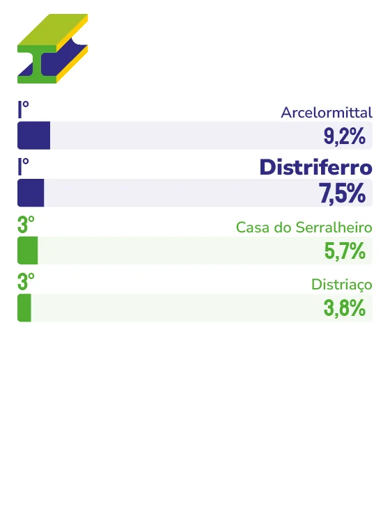

COMÉRCIO ATACADISTA DE AÇO E FERRAGENS
DISTRIFERRO
Líder no segmento de comércio atacadista de aço e ferragens na Grande Vitória, a Distriferro criou e mantém uma atuação de consistência, respeito ao cliente e uma filosofia de negócio que atravessa décadas sem precisar de revisão.
Mais de três décadas no comércio atacadista de aço e ferragens, e a explicação para o reconhecimento espontâneo dos capixabas é direta e sem rodeios: “Como dizem, a melhor propaganda é o ‘boca a boca’. Um cliente satisfeito é o nosso maior aliado em transmitir a nossa credibilidade a outras pessoas”, afirma o sócio administrador da Distriferro, Douglas Barbosa. Essa lógica de fazer bem feito, sempre, sem exceção, é o que coloca a empresa no topo de um segmento técnico e exigente.
O diferencial que Barbosa destaca quando o assunto é o dia a dia da operação diz muito sobre a cultura da empresa. “Provavelmente, o nosso respeito ao cliente seja um diferencial raro de se encontrar hoje em dia. Não somos apenas uma empresa que persegue o lucro a qualquer custo; entendemos nosso cliente como nosso parceiro e não apenas como alguém que está pagando por um produto / serviço que oferecemos.”
Quando questionado sobre qual momento de virada foi decisivo para fortalecer o vínculo com o público, a resposta de Barbosa surpreende pela sua honestidade: “Nunca precisou haver, pois sempre tivemos a mesma forma de trabalhar, e provavelmente isso explica tantos prêmios conquistados ao longo dos anos”. Essa é uma declaração rara e reveladora. Enquanto concorrentes reinventam posicionamentos e trocam conceitos, a Distriferro simplesmente segue fazendo o que sempre fez, da mesma forma, com o mesmo cuidado.
“O mundo em geral está passando por momentos delicados que influenciam a dinâmica do mercado nacional e regional”, reconhece Barbosa. Mas a resposta da empresa a esse cenário é consistente com sua história: investimento em inovação em máquinas para agregar valor aos produtos e compromisso com produtividade e agilidade crescentes nos processos industriais e comerciais.
Sobre o futuro, Barbosa reconhece a dificuldade de prever como será o mercado em 2040. Mas tem clareza absoluta sobre o que não pode mudar, e esse ponto de certeza diz mais sobre a empresa do que qualquer plano estratégico. “O que não pode mudar, nem vai, é a necessidade de o cliente se sentir respeitado e acolhido por um bom atendimento, ser atendido com material de qualidade e saber que está comprando numa empresa que está há mais de três décadas sustentada em cima de três pilares: qualidade, credibilidade e confiança.”

Douglas Barbosa
Sócio administrador da Distriferro
“Esse reconhecimento é mais um indício de que continuamos trilhando o caminho certo, o do respeito e consideração ao cliente. Acreditamos que essa boa impressão que passamos ao realizar um bom serviço repercute na sociedade em geral e é o que faz nossa marca estar no imaginário de boa parte do público.”
108
